WYDRUKUJ SWOJE
ZDJĘCIE 360°
.png)
WYDRUKUJ SWOJE
ZDJĘCIE 360°
Na czym to
polega
Wgraj swoje zdjęcie sferyczne i wydrukuj w postaci siatki wielościanu, która po złożeniu stworzy okrągłą figurę gotową do złożenia


Instrukcja
potrzebne
przyrządy
nożyczki

klej
drukarka
jak to zrobić

wydrukuj
Pobierz gotową siatkę bryły ze swoim obrazem i wydrukuj w wybrany przez ciebie sposób!
wytnij
Po wydrukowniu wytnij siatke wielościanu wzdłuż zewnętrznych krawędzi obrazu.

złóż
Wycięty obraz zegnij wzdłuż wewnętrznych krawędzi, tak aby siatka sama się składała w kształt przypominający kule
sklej
Nałóż klej na przeznaczone do tego elementy nie będące częscią wybranego wcześniej zdjęcia lub obrazu i przyłóż je do
Łatwe do złożenia, każdy może sobie z tym poradzić bez względu na wiek i umiejętności.
Samo składanie figury może sprawić wiele frajdy dla ciebie i twoich bliskich.
Gotowe złożone zdjęcie można postawić w dowolnym miejsciu w domu
Zdjecie sferyczne
Zrob idealne zdjecie sferyczne swoim telefonem
walksee jest aplikacją do rejestracji zdjęc 360 oraz tworzenia spacerow wirtualnych po nieruchomosciach
https://walksee.pl